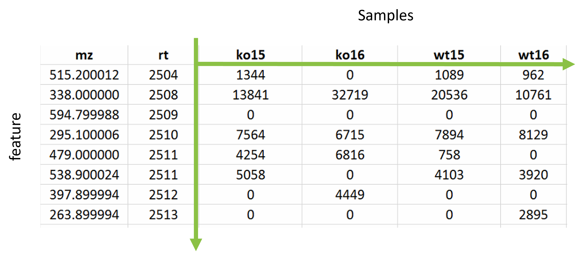

Metabolomics data are typically analysed as a matrix of intensities where one axis consists of the samples that were analysed and the other axis consists of the features. The features of interest for this experiment are the m/z at a specific retention time (RT).

The entire data processing, from raw mass spectrometry data to a usable omics data matrix for grouping is beyond the scope of this tutorial. Instead, we will work with a few key data matrices undergoing standard metabolomics data processing.
In brief, the following steps were already performed:
The mass spectrometry data processing workflow was developed by the University of Birmingham metabolomics research groups and the Phenome Centre Birmingham (PCB). The current implementation uses the R packages struct, structToolbox, and pmp developed by the PCB informatics team (Lloyd, Jankevics, and Weber 2020).
The full details of the data processing methods are found in the supplemental materials of the Cefic MATCHING publication (Viant et al. 2024).
The HILIC_POS assay for male rodents was used as an example for this practical with the following relevant data files for the training available on the github site:
Let’s start with the pre-filtering and pre-normalisation dataset and see what a typical metabolomics data matrix looks like.
hilic_pos_all <- read.csv(file.path(root, 'data/HILIC_POS_male/1_unfiltered.csv'), row.names = 1)Again, we can use the RStudio Environment panel and
click on the hilic_pos_all data object to see a more user
friendly view of the data.
The row names refers to the m/z and retention time of a feature whilst the column names are the samples.
Let’s check how many samples and features we have for this data
matrix, we can use the functions nrow and ncol
for this.
# feature count
nrow(hilic_pos_all)
# sample count
ncol(hilic_pos_all)## [1] 12123
## [1] 112Now that we have a better understanding of metabolomics data matrices, we can briefly explain the quality assessments before getting started on the statistical analysis.